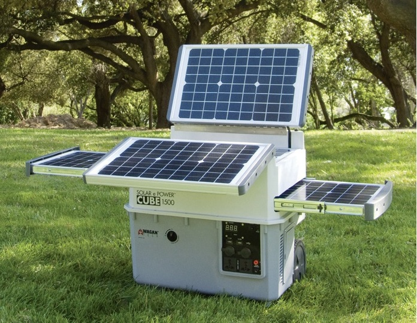
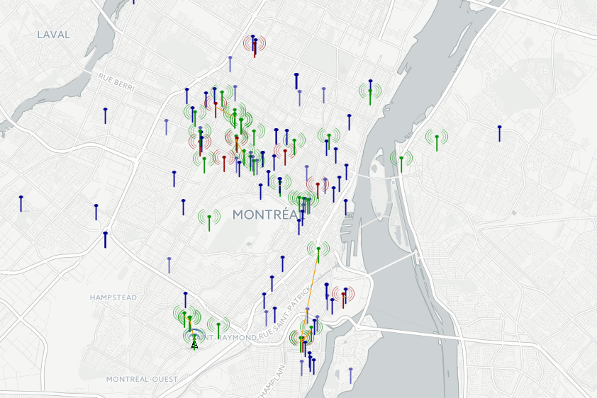

C4LN 2017 presentation
John Fink, Digital Scholarship Librarian, McMaster University
the anthropocene
ham radio
solar power

wireless networking for the development world
mesh nets/hyperboria.net / hsmm-mesh
